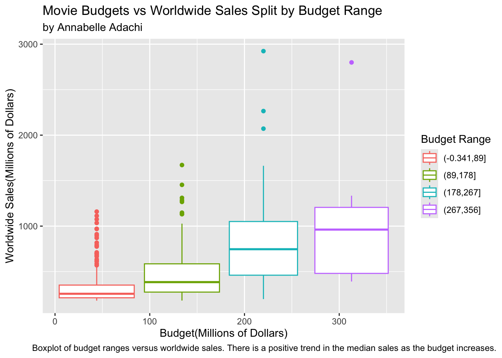

Project AA Battery: Patterns of Movie Box Office Success
In this data project, we wanted to look at what makes a movie successful at the box office, and how those factors for success have changed over time. We were curious to see if any trends would emerge that were surprising to us.
The dataset we used is “Top 1000 Highest Grossing Movies”, published to kaggle by Sanjeet Singh Naik. It pulls movie data from a variety of sites, including IMDB and Rotten Tomatoes. The dataset was last updated on September 25th, 2023.
We formulated these four research questions to address a variety of factors of box office success:
- How does the time of year of a movie’s release affect sales?
- What is the relationship between a movie’s budget and revenue?
- What are the genre trends for movies released over time?
- How has the relationship between run time and movie success changed over time?
After cleaning up the dataset and doing some wrangling(see EDA), we got started on the research questions.
1 How does the time of year of a movie’s release affect sales? - Alpha
Code
# 1. Load the corrected cleaned file
movies <- read.csv("data/movies_cleaned_final_with_correct_month.csv")
# 2. FIX the month so it displays January, February, etc.
movies$release_month <- factor(movies$release_month, levels = 1:12, labels = month.name, ordered = TRUE)
# -------------------------------------------------
# Plot 1: Time of Year Affecting Sales
# -------------------------------------------------
ggplot(movies, aes(x = release_month, y = world_wide_sales)) +
geom_boxplot(fill = "skyblue", outlier.color = "red", outlier.alpha = 0.5) +
labs(
title = "Worldwide Sales by Month of Release",
subtitle = "Boxplots show spread, median, and outliers by month",
x = "Release Month",
y = "Worldwide Sales (Log Scale)"
) +
theme_minimal(base_size = 16) +
theme(
plot.title = element_text(face = "bold", size = 20, hjust = 0.5),
plot.subtitle = element_text(size = 14, hjust = 0.5),
axis.title.x = element_text(margin = margin(t = 10)),
axis.title.y = element_text(margin = margin(r = 10)),
axis.text.x = element_text(angle = 45, hjust = 1, size = 12),
axis.text.y = element_text(size = 12)
) +
scale_y_continuous(trans = "log10", labels = scales::dollar)The first plot is a boxplot showing worldwide sales by month of release. Each box summarizes the distribution of earnings for that month, including the median, quartiles, and outliers. While the median earnings differ somewhat month to month, there’s no single month that guarantees higher success. However, the summer months (June and July) and holiday months (November and December) tend to show slightly higher median revenues, suggesting that release timing might offer a modest advantage, but does not strongly predict performance.
2 What is the relationship between a movie’s budget and revenue? - Annabelle
Code
movies <- read_csv("~/Documents/GitHub/project-aa-battery/movies.csv")
movies <- movies |>
mutate(budget = as.numeric(`Budget (in $)`) ,
dom_sales = `Domestic Sales (in $)`/1000000 ,
int_sales = `International Sales (in $)`/1000000 ,
ww_sales = `World Wide Sales (in $)`/1000000) |>
mutate(release_date = str_replace_all(`Release Date`, c("Jan" = "1",
"Feb" = "2",
"Mar" = "3",
"Apr" = "4",
"May" = "5",
"Jun" = "6",
"Jul" = "7",
"Aug" = "8",
"Sep" = "9",
"Oct" = "10",
"Nov" = "11",
"Dec" = "12"))) |>
mutate(release_date = as.Date(release_date, "%d-%m-%y")) |>
separate(`Running Time`, c("hour", "min"), sep = "hr") |>
mutate(min = str_replace(min, "min", "")) |>
mutate(hour = as.numeric(hour),
min = as.numeric(min),
run_time = (hour*60) + min)
movies |>
mutate(budget = budget/1000000) |> # convert budget number to millions
filter(!is.na(budget)) |>
ggplot(aes(x = budget, y = ww_sales, color = cut(budget, 4))) +
geom_boxplot() +
labs(title = "Movie Budgets vs Worldwide Sales Split by Budget Range",
x = "Budget(Millions of Dollars)",
y = "Worldwide Sales(Millions of Dollars)",
color = "Budget Range",
subtitle = "by Annabelle Adachi",
caption = "Boxplot of budget ranges versus worldwide sales. There is a positive trend in the median sales as the budget increases.") +
theme(plot.caption.position = "plot")
This boxplot demonstrates that there is a slight trend of higher worldwide sales as a movie’s budget increases. This plot also shares some interesting insights about the differences in data distribution when films are compared to others with similar budgets. In the lowest budget range, in red, the middle quartile of movies are much more concentrated range of worldwide sales, and there are also the most outliers out of any group that earn much higher worldwide sales than the median. This makes sense, given the breakout success of films like the Blair Witch Project which are successful because people are drawn to the DIY aesthetic that a lower budget brings. As the budget range increases, so does the range of sales numbers in the middle quartile of movies. This is possibly because bigger budgets take more risks and are often more focused on commerce than art, which audiences can have mixed reactions to. This could also be due to the fact that there are more datapoints in this dataset for movies with higher budgets, which further supports the idea of a positive correlation between high budgets and high worldwide sales, since this dataset only includes the top 1000 highest-grossing films.
3 What are the genre trends for movies released over time? - Annabelle
Code
genre_movies <- movies |>
separate(Genre, c("genre1", "genre2", "genre3", "genre4", "genre5", "genre6", "genre7"), sep = "'") |>
select(-genre1, -genre3, -genre5, -genre7) |>
mutate(genre_1 = genre2, genre_2 = genre4, genre_3 = genre6) |>
select(-genre2, -genre4, -genre6)
genre_movies |>
group_by(genre_1) |>
summarise(total = sum(ww_sales)) |>
ggplot(aes(x = genre_1, y = total)) +
geom_col() + # total worldwide sales across all time by genre
labs(x = "Movie Genre",
y = "Total Movies",
title = "Total Amount of Movies Released Across All Time by Genre",
subtitle = "by Annabelle Adachi",
caption = "Column plot visualizing count of movies released in each genre.") +
theme(plot.caption.position = "plot")Code
genre_movies |>
group_by(genre_1, Year) |>
summarise(avg = mean(ww_sales)) |>
ggplot(aes(x = Year, y = avg, color = genre_1)) +
geom_col() +
facet_wrap(~genre_1) +
labs(title = "Trends in Yearly Average Worldwide Sales by Genre",
y = "Average Worldwide Sales(Millions of Dollars)",
subtitle = "by Annabelle Adachi",
caption = "Column plot visualizing trends in movie success over time by genre.") +
theme(legend.position = "none",
plot.caption = element_text(hjust = 0.5))This column plot shows the trends in the success of certain genres over time. There are eleven genres represented: action, adventure, animation, biography, comedy, crime, documentary, drama, fantasy, horror, and mystery. Movies are sorted by the first genre listed(the dataset included a list of many genres for each movie) in order to simplify the data and draw clearer conclusions. The action and adventure genres tend to have higher and more consistent box office success than others. Genres like animation, documentary, fantasy, and mystery don’t tend to have a lot of high-grossing movies that are primarily that genre. The action, biography, and crime genres have trended to have more success in more recent years. Comedy, drama, and horror have stayed fairly consistent with their numbers, with horror having a slight peak around the early 2010s. The most interesting part of this plot is the extreme outlier in the drama genre in 1997, which is solely due to Titanic, one of the highest-grossing movies of all time. Titanic was the only film in this dataset released in 1997 with its main genre listed as drama.
4 How has the relationship between run time and movie success changed over time? - Alpha
Code
# 1. Load the corrected cleaned file
movies <- read.csv("data/movies_cleaned_final_with_correct_month.csv")
# Simple scatterplot + trendline
ggplot(movies, aes(x = running_time_minutes, y = world_wide_sales)) +
geom_point(alpha = 0.5, size = 2, color = "#1D3557") +
geom_smooth(method = "lm", se = TRUE, color = "#E63946", size = 1.2) +
labs(
title = "Relationship Between Runtime and Worldwide Sales",
subtitle = "Each point is a movie, with a trendline",
x = "Runtime (Minutes)",
y = "Worldwide Sales (Log Scale)"
) +
theme_minimal(base_size = 16) +
theme(
plot.title = element_text(face = "bold", size = 16, hjust = 0.5),
plot.subtitle = element_text(size = 12, hjust = 0.5),
axis.title.x = element_text(margin = margin(t = 10)),
axis.title.y = element_text(margin = margin(r = 10))
) +
scale_y_continuous(trans = "log10", labels = scales::dollar)The last plot is a scatterplot of runtime versus worldwide sales, with a fitted regression line. Each dot represents one movie, and sales are plotted on a logarithmic scale to better visualize the large differences in revenue. The regression line shows a slight upward slope. A Pearson correlation confirmed this trend, with r = 0.297, indicating a weak-to-moderate positive relationship between runtime and revenue. In other words, longer movies tend to earn slightly more, but the relationship is not strong. Most top-performing movies fall between 90 and 140 minutes, with only a few longer films standing out as outliers.
After also running a Pearson correlation analysis only a weak-to-moderate positive relationship (r = 0.297) between runtime and worldwide sales was noticed, suggesting that longer movies tend to perform slightly better at the box office, although runtime alone is not a strong predictor of success.